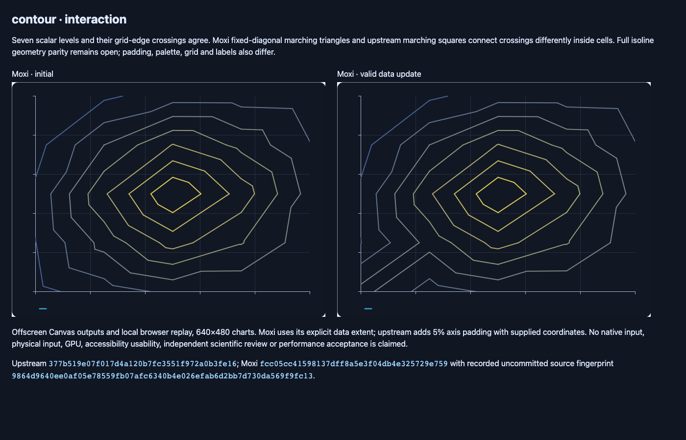
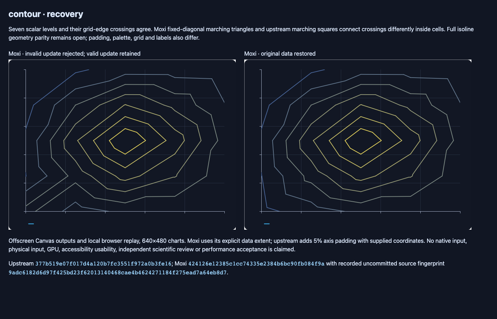
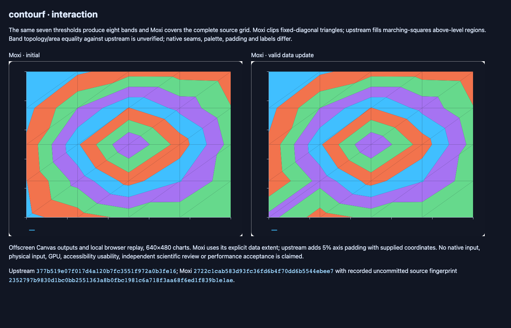
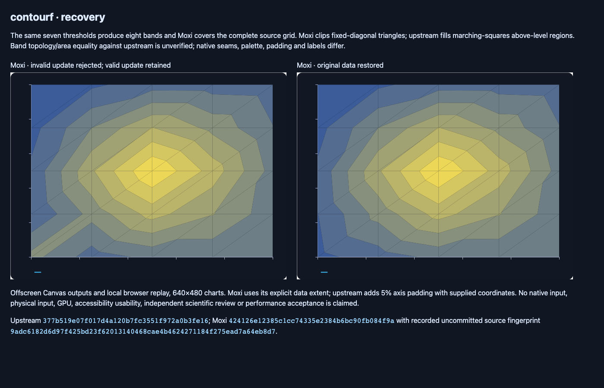
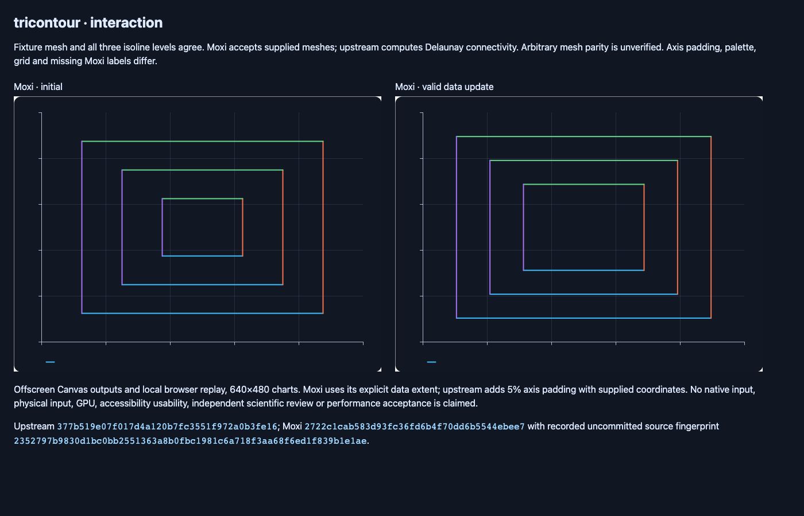
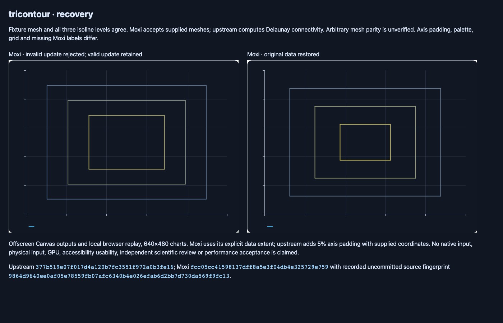

contour · comparison Action: Open contour-comparison.html Expected: Seven scalar levels and their grid-edge crossings agree. Moxi fixed-diagonal marching triangles and upstream marching squares connect crossings differently inside cells. Full isoline geometry parity remains open; padding, palette, grid and labels also differ.
result · browser · 1400 × 900 pixels

contour · interaction Action: Open contour-interaction.html Expected: Valid data update changes the rendered chart.
interaction · browser · 1400 × 900 pixels

contour · recovery Action: Open contour-recovery.html Expected: Rejected data preserves the last valid chart; restoring original data restores identical pixels.
contourf · comparison Action: Open contourf-comparison.html Expected: The same seven thresholds produce eight bands and Moxi covers the complete source grid. Moxi clips fixed-diagonal triangles; upstream fills marching-squares above-level regions. Band topology/area equality against upstream is unverified; native seams, palette, padding and labels differ.
result · browser · 1400 × 900 pixels

contourf · interaction Action: Open contourf-interaction.html Expected: Valid data update changes the rendered chart.
interaction · browser · 1400 × 900 pixels

contourf · recovery Action: Open contourf-recovery.html Expected: Rejected data preserves the last valid chart; restoring original data restores identical pixels.
tricontour · comparison Action: Open tricontour-comparison.html Expected: Fixture mesh and all three isoline levels agree. Moxi accepts supplied meshes; upstream computes Delaunay connectivity. Arbitrary mesh parity is unverified. Axis padding, palette, grid and missing Moxi labels differ.
result · browser · 1400 × 900 pixels

tricontour · interaction Action: Open tricontour-interaction.html Expected: Valid data update changes the rendered chart.
interaction · browser · 1400 × 900 pixels

tricontour · recovery Action: Open tricontour-recovery.html Expected: Rejected data preserves the last valid chart; restoring original data restores identical pixels.
recovery · browser · 1400 × 900 pixels
Contact sheetReproduce
See README.md in this directory.
Three real upstream references and bounded comparisons; full visual parity remains partial.
Screenshots show recorded states. They do not establish latency, scientific accuracy, physical IME, screen-reader behavior, or human usability.